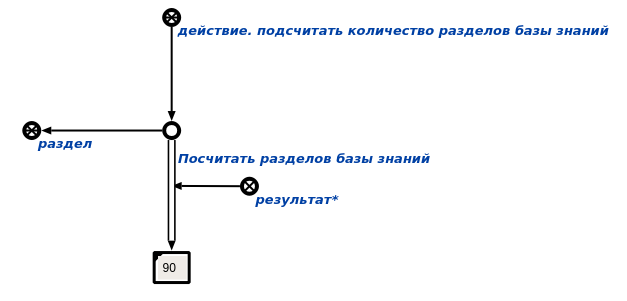

Задача: подсчет количества разделов базы знаний.
Описание: агент находит экземпляры класса раздел и вызывает процедуру подсчета мощности множества.
Инициализация: появление в памяти вопросной конструкции, соответствующей действию. подсчитать количество разделов базы знаний.
Аргументы: отсутствуют.
Результаты:
Пример:
